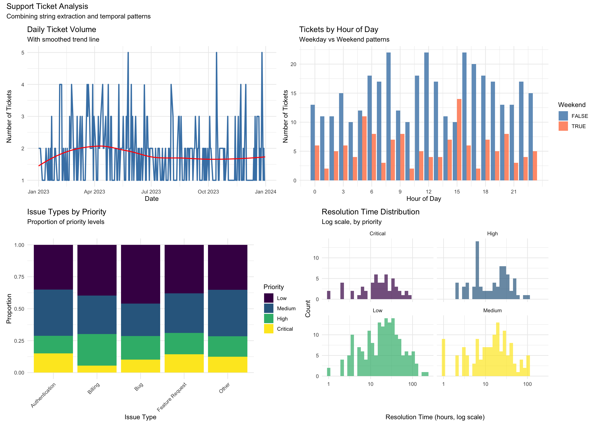
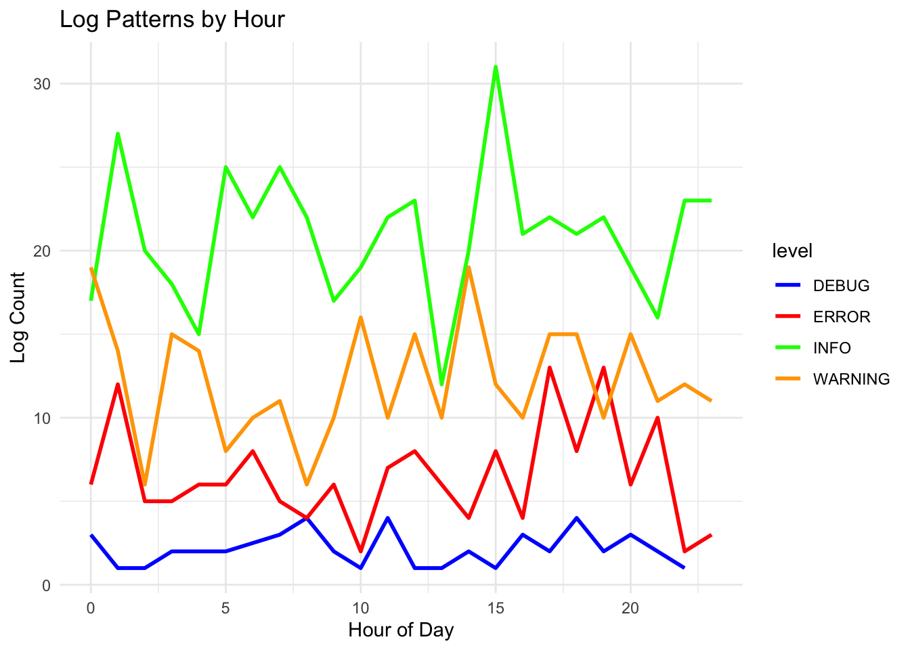

Chapter 7: Working with Strings and Dates - Text and Time in the Tidyverse
Author
David Sarrat González, Juan R González
Published
October 6, 2025
Learning Objectives
By the end of this chapter, you will master:
String manipulation with stringr
Pattern matching with regular expressions
Text cleaning and extraction
Date and time handling with lubridate
Time zone management
Date arithmetic and intervals
Combining text and temporal data in analyses
Real-world applications and best practices
Why Strings and Dates Matter
In real-world data analysis, you’ll rarely work with perfectly clean numeric data. Most datasets contain: - Text data: Names, addresses, descriptions, categories, IDs - Temporal data: Timestamps, dates, durations, time zones
These data types are notoriously tricky to work with because: - Text can be messy, inconsistent, and encoded differently - Dates come in countless formats - Time zones add complexity - Both require special handling for analysis
The tidyverse provides powerful, consistent tools to tackle these challenges. Let’s master them!
Setup
library(tidyverse)
-- Attaching core tidyverse packages ------------------------ tidyverse 2.0.0 --
v dplyr 1.1.4 v readr 2.1.5
v forcats 1.0.0 v stringr 1.5.2
v ggplot2 4.0.0 v tibble 3.3.0
v lubridate 1.9.4 v tidyr 1.3.1
v purrr 1.1.0
-- Conflicts ------------------------------------------ tidyverse_conflicts() --
x dplyr::filter() masks stats::filter()
x dplyr::lag() masks stats::lag()
i Use the conflicted package (<http://conflicted.r-lib.org/>) to force all conflicts to become errors
library(lubridate) # For dates and timeslibrary(stringr) # For string manipulation (loaded with tidyverse)library(hms) # For time-of-day values
Adjuntando el paquete: 'hms'
The following object is masked from 'package:lubridate':
hms
# Set seed for reproducibilityset.seed(123)# We'll create various example datasets throughouttheme_set(theme_minimal())
Part 1: String Manipulation with stringr
Understanding Strings in R
Strings (text data) are fundamental to data analysis, but they’re often the messiest part of our data. The stringr package provides a consistent, intuitive interface for string manipulation.
All stringr functions: - Start with str_ for easy autocomplete - Take the string as the first argument (pipe-friendly) - Use consistent naming conventions - Handle NA values gracefully
Let’s start with basic operations:
# Create example stringsmessy_names <-c(" John Smith ","mary jones","ROBERT BROWN","Sarah O'Connor","José García",NA,"anne-marie wilson")# Basic string informationstr_length(messy_names) # Length of each string
# The power of vectorization - operations work on entire vectorsdata.frame(original = messy_names,length =str_length(messy_names),n_spaces =str_count(messy_names, " "),n_vowels =str_count(messy_names, "[aeiouAEIOU]"))
original length n_spaces n_vowels
1 John Smith 14 5 2
2 mary jones 10 1 3
3 ROBERT BROWN 12 1 3
4 Sarah O'Connor 14 1 5
5 Jos<U+00E9> Garc<U+00ED>a 25 1 7
6 <NA> NA NA NA
7 anne-marie wilson 17 1 7
Notice how stringr handles NA values gracefully - operations on NA return NA rather than erroring out. This is crucial for real-world data processing.
String Transformation
Let’s clean up our messy names systematically:
# Step-by-step cleaningcleaned_names <- messy_names %>%str_trim() %>%# Remove leading/trailing whitespacestr_squish() %>%# Remove extra internal whitespacestr_to_title() %>%# Proper case (Title Case)str_replace_all("'", "'") # Standardize apostrophes# Compare before and aftertibble(original = messy_names,cleaned = cleaned_names) %>%print(n =10)
# A tibble: 7 x 2
original cleaned
<chr> <chr>
1 " John Smith " John Smith
2 "mary jones" Mary Jones
3 "ROBERT BROWN" Robert Brown
4 "Sarah O'Connor" Sarah O'connor
5 "Jos<U+00E9> Garc<U+00ED>a" Jos<U+00e9> Garc<U+00ed>A
6 <NA> <NA>
7 "anne-marie wilson" Anne-Marie Wilson
# Other case transformationscase_examples <-"The Quick BROWN Fox"tibble(original = case_examples,lower =str_to_lower(case_examples),upper =str_to_upper(case_examples),title =str_to_title(case_examples),sentence =str_to_sentence(case_examples))
# A tibble: 1 x 5
original lower upper title sentence
<chr> <chr> <chr> <chr> <chr>
1 The Quick BROWN Fox the quick brown fox THE QUICK BROWN FOX The Quic~ The qui~
Each transformation serves a specific purpose: - str_trim(): Removes accidental spaces from data entry - str_squish(): Fixes multiple spaces between words - str_to_title(): Standardizes capitalization for names - str_replace_all(): Fixes encoding issues with special characters
Pattern Matching and Regular Expressions
Regular expressions (regex) are powerful pattern-matching tools. While they look cryptic at first, they’re invaluable for text processing.
# Sample text dataemails <-c("john.doe@company.com","alice@university.edu","bob.smith@email.co.uk","invalid-email","another@domain.org","not an email at all",NA)# Detect patternshas_at <-str_detect(emails, "@") # Simple patternhas_dot_com <-str_detect(emails, "\\.com$") # .com at end ($ = end of string)# Extract patternsdomains <-str_extract(emails, "@[^.]+\\.[a-z]+") # Extract domainusernames <-str_extract(emails, "^[^@]+") # Everything before @# Create a summaryemail_analysis <-tibble(email = emails,is_valid =str_detect(emails, "^[^@]+@[^@]+\\.[^@]+$"),username = usernames,domain =str_remove(domains, "@"),tld =str_extract(emails, "\\.[a-z]+$"))print(email_analysis)
# A tibble: 7 x 5
email is_valid username domain tld
<chr> <lgl> <chr> <chr> <chr>
1 john.doe@company.com TRUE john.doe company.com .com
2 alice@university.edu TRUE alice university.edu .edu
3 bob.smith@email.co.uk TRUE bob.smith email.co .uk
4 invalid-email FALSE invalid-email <NA> <NA>
5 another@domain.org TRUE another domain.org .org
6 not an email at all FALSE not an email at all <NA> <NA>
7 <NA> NA <NA> <NA> <NA>
Let’s break down these regex patterns: - @ - Literal @ symbol - \\. - Literal period (. alone means “any character”) - ^ - Start of string - $ - End of string - [^@]+ - One or more characters that are NOT @ - [a-z]+ - One or more lowercase letters
Advanced Pattern Matching
Let’s work with more complex patterns:
# Phone numbers in various formatsphone_numbers <-c("(555) 123-4567","555-123-4567","5551234567","555.123.4567","+1 555 123 4567","Call me at 555-1234","invalid",NA)# Extract digits onlydigits_only <-str_remove_all(phone_numbers, "[^0-9]")print(digits_only)
[1] "5551234567" "5551234567" "5551234567" "5551234567" "15551234567"
[6] "5551234" "" NA
# A tibble: 8 x 2
original standardized
<chr> <chr>
1 (555) 123-4567 "(555) 123-4567"
2 555-123-4567 "(555) 123-4567"
3 5551234567 "(555) 123-4567"
4 555.123.4567 "(555) 123-4567"
5 +1 555 123 4567 "(555) 123-4567"
6 Call me at 555-1234 "5551234"
7 invalid ""
8 <NA> <NA>
# Extract structured informationaddresses <-c("123 Main St, New York, NY 10001","456 Oak Avenue, Los Angeles, CA 90028","789 Elm Rd, Chicago, IL 60601","321 Pine Street, Houston, TX 77002")# Extract components using regex groupsaddress_parts <-str_match(addresses, "(\\d+) ([^,]+), ([^,]+), ([A-Z]{2}) (\\d{5})")colnames(address_parts) <-c("full", "number", "street", "city", "state", "zip")as_tibble(address_parts) %>%select(-full) # Remove the full match column
# A tibble: 4 x 5
number street city state zip
<chr> <chr> <chr> <chr> <chr>
1 123 Main St New York NY 10001
2 456 Oak Avenue Los Angeles CA 90028
3 789 Elm Rd Chicago IL 60601
4 321 Pine Street Houston TX 77002
The power of regex groups (parentheses) is that they let us extract multiple pieces of information in one operation. Each group becomes a separate column in the output.
String Splitting and Combining
Real data often requires splitting combined fields or joining separate ones:
# Full names that need splittingfull_names <-c("Smith, John","Jones, Mary Ann","Brown Jr., Robert","O'Connor, Sarah","García-López, José María")# Split on comma and clean upname_parts <-str_split_fixed(full_names, ", ", n =2)colnames(name_parts) <-c("last_name", "first_name")name_df <-as_tibble(name_parts) %>%mutate(# Clean up any extra spacesfirst_name =str_trim(first_name),last_name =str_trim(last_name),# Create display namedisplay_name =str_c(first_name, " ", last_name),# Create email-friendly versionemail_name =str_c(str_to_lower(str_extract(first_name, "\\w+")), # First word only".",str_to_lower(str_replace_all(last_name, "[^a-zA-Z]", "")), # Letters only"@company.com" ) )print(name_df)
# A tibble: 5 x 4
last_name first_name display_name email_name
<chr> <chr> <chr> <chr>
1 Smith John John Smith john.smit~
2 Jones Mary Ann Mary Ann Jones mary.jone~
3 Brown Jr. Robert Robert Brown J~ robert.br~
4 O'Connor Sarah Sarah O'Connor sarah.oco~
5 Garc<U+00ED>a-L<U+00F3>pez Jos<U+00E9> Mar<U+00ED>a Jos<U+00E9> Ma~ jos.garcu~
# Combining multiple fieldsproduct_data <-tibble(brand =c("Apple", "Samsung", "Google"),model =c("iPhone", "Galaxy", "Pixel"),version =c("14 Pro", "S23", "7a"),year =c(2022, 2023, 2023))product_data %>%mutate(# Various ways to combinefull_name =str_c(brand, model, version, sep =" "),sku =str_c(str_to_upper(str_sub(brand, 1, 3)), # First 3 letters of brandstr_extract(version, "\\d+"), # Version number year,sep ="-" ),marketing_name =str_glue("{brand} {model} {version} ({year})") )
# A tibble: 3 x 7
brand model version year full_name sku marketing_name
<chr> <chr> <chr> <dbl> <chr> <chr> <glue>
1 Apple iPhone 14 Pro 2022 Apple iPhone 14 Pro APP-14-2022 Apple iPhone 14 ~
2 Samsung Galaxy S23 2023 Samsung Galaxy S23 SAM-23-2023 Samsung Galaxy S~
3 Google Pixel 7a 2023 Google Pixel 7a GOO-7-2023 Google Pixel 7a ~
Notice the different joining functions: - str_c(): Basic concatenation with separator - str_glue(): Template-based joining (like Python f-strings) - paste() and paste0(): Base R alternatives (less consistent)
Part 2: Date and Time with lubridate
Understanding Temporal Data
Dates and times are deceptively complex: - Different formats (MM/DD/YYYY vs DD/MM/YYYY) - Time zones - Daylight saving time - Leap years and leap seconds - Different calendar systems
Lubridate makes working with dates intuitive and reliable.
# Today's date and current timetoday()
[1] "2025-10-01"
now()
[1] "2025-10-01 12:48:28 CEST"
# Parse dates from strings - lubridate is smart!date_strings <-c("2023-01-15","01/15/2023","15-Jan-2023","January 15, 2023","20230115")# Different parsing functions for different formatsparsed_dates <-tibble(original = date_strings,ymd =ymd("2023-01-15"),mdy =mdy("01/15/2023"),dmy =dmy("15-01-2023"),smart_parse =parse_date_time(date_strings, orders =c("ymd", "mdy", "dmy", "Bdy", "ymd")))print(parsed_dates)
The genius of lubridate is the intuitive function names: - ymd(): Year-Month-Day - mdy(): Month-Day-Year - dmy(): Day-Month-Year - ymd_hms(): With time included
Date Components and Arithmetic
Once we have dates, we can extract components and do arithmetic:
# A tibble: 12 x 11
date year month month_name day weekday quarter week_of_year
<date> <dbl> <dbl> <ord> <int> <ord> <int> <dbl>
1 2023-01-01 2023 1 January 1 Sunday 1 1
2 2023-02-01 2023 2 February 1 Wednesday 1 5
3 2023-03-01 2023 3 March 1 Wednesday 1 9
4 2023-04-01 2023 4 April 1 Saturday 2 13
5 2023-05-01 2023 5 May 1 Monday 2 18
6 2023-06-01 2023 6 June 1 Thursday 2 22
7 2023-07-01 2023 7 July 1 Saturday 3 26
8 2023-08-01 2023 8 August 1 Tuesday 3 31
9 2023-09-01 2023 9 September 1 Friday 3 35
10 2023-10-01 2023 10 October 1 Sunday 4 40
11 2023-11-01 2023 11 November 1 Wednesday 4 44
12 2023-12-01 2023 12 December 1 Friday 4 48
# i 3 more variables: day_of_year <dbl>, is_weekend <lgl>, days_in_month <int>
# Date arithmetic is intuitivereference_date <-ymd("2023-06-15")tibble(description =c("Original date","Plus 30 days","Plus 2 months","Plus 1 year","Next Monday","End of month","Beginning of year" ),date =c( reference_date, reference_date +days(30), reference_date +months(2), reference_date +years(1),ceiling_date(reference_date, "week", week_start =1),ceiling_date(reference_date, "month") -days(1),floor_date(reference_date, "year") ))
# A tibble: 7 x 2
description date
<chr> <date>
1 Original date 2023-06-15
2 Plus 30 days 2023-07-15
3 Plus 2 months 2023-08-15
4 Plus 1 year 2024-06-15
5 Next Monday 2023-06-19
6 End of month 2023-06-30
7 Beginning of year 2023-01-01
Key insights about date arithmetic: - Adding days is straightforward - Adding months/years handles edge cases (e.g., Jan 31 + 1 month = Feb 28/29) - floor_date() and ceiling_date() are perfect for grouping
# A tibble: 4 x 7
datetime_string parsed date_only time_only hour minute am_pm
<chr> <dttm> <date> <chr> <int> <int> <chr>
1 2023-06-15 14:30:~ 2023-06-15 14:30:00 2023-06-15 14:30:00 14 30 PM
2 2023-06-15 2:30:0~ 2023-06-15 14:30:00 2023-06-15 14:30:00 14 30 PM
3 15/06/2023 14:30 2015-06-20 23:14:30 2015-06-20 23:14:30 23 14 PM
4 June 15, 2023 2:3~ NA NA <NA> NA NA <NA>
# Time differences and durationsstart_time <-ymd_hms("2023-06-15 09:00:00")end_time <-ymd_hms("2023-06-15 17:30:00")# Different ways to express time differencestime_diff <- end_time - start_timeprint(time_diff) # In seconds by default
Time difference of 8.5 hours
# Convert to different unitstibble(unit =c("seconds", "minutes", "hours", "days"),value =c(as.numeric(time_diff, units ="secs"),as.numeric(time_diff, units ="mins"),as.numeric(time_diff, units ="hours"),as.numeric(time_diff, units ="days") ))
# A tibble: 4 x 2
unit value
<chr> <dbl>
1 seconds 30600
2 minutes 510
3 hours 8.5
4 days 0.354
Time Zones - The Hidden Complexity
Time zones are often the source of subtle bugs in data analysis:
# Working with time zonesutc_time <-ymd_hms("2023-06-15 12:00:00", tz ="UTC")# Convert to different time zonestime_zones <-tibble(timezone =c("UTC", "America/New_York", "Europe/London", "Asia/Tokyo", "Australia/Sydney"),local_time =c( utc_time,with_tz(utc_time, "America/New_York"),with_tz(utc_time, "Europe/London"),with_tz(utc_time, "Asia/Tokyo"),with_tz(utc_time, "Australia/Sydney") ),offset_hours =c(0, -4, 1, 9, 10) # Offset from UTC (varies with DST!))print(time_zones)
# Force_tz vs with_tzambiguous_time <-ymd_hms("2023-06-15 12:00:00") # No timezone specifiedtibble(description =c("Original (no tz)","with_tz - converts time","force_tz - keeps time, changes zone" ),result =c(as.character(ambiguous_time),as.character(with_tz(ambiguous_time, "America/New_York")),as.character(force_tz(ambiguous_time, "America/New_York")) ))
# A tibble: 3 x 2
description result
<chr> <chr>
1 Original (no tz) 2023-06-15 12:00:00
2 with_tz - converts time 2023-06-15 08:00:00
3 force_tz - keeps time, changes zone 2023-06-15 12:00:00
The difference between with_tz() and force_tz(): - with_tz(): Changes the display timezone (same moment in time) - force_tz(): Changes the timezone interpretation (different moment)
Intervals, Durations, and Periods
Lubridate distinguishes between three concepts:
# Intervals: specific start and end timesinterval_1 <-interval(ymd("2023-01-01"), ymd("2023-12-31"))interval_2 <-interval(ymd("2023-06-01"), ymd("2023-08-31"))# Check overlapint_overlaps(interval_1, interval_2)
[1] TRUE
# Durations: exact time spans (in seconds)duration_1 <-ddays(7) +dhours(3) +dminutes(30)print(duration_1)
[1] "617400s (~1.02 weeks)"
# Periods: human-friendly time spansperiod_1 <-days(7) +hours(3) +minutes(30)print(period_1)
[1] "7d 3H 30M 0S"
# The difference matters!# Consider daylight saving timedst_start <-ymd_hms("2023-03-11 00:00:00", tz ="America/New_York")tibble(description =c("Original time","Plus duration (24 hours)","Plus period (1 day)" ),result =c( dst_start, dst_start +ddays(1), # Exactly 24 hours later dst_start +days(1) # Next calendar day at same time ))
# A tibble: 3 x 2
description result
<chr> <dttm>
1 Original time 2023-03-11 00:00:00
2 Plus duration (24 hours) 2023-03-12 00:00:00
3 Plus period (1 day) 2023-03-12 00:00:00
Use: - Intervals: When you need specific start/end times - Durations: For exact time calculations - Periods: For human-friendly calculations
Combining Strings and Dates in Real Analysis
Let’s work with a realistic example combining both:
# A tibble: 20 x 6
issue_type priority count resolved_pct avg_resolution_hours
<chr> <chr> <int> <dbl> <dbl>
1 Authentication Critical 12 91.7 20.8
2 Authentication High 11 90.9 20.3
3 Authentication Low 28 78.6 23.9
4 Authentication Medium 29 93.1 20.4
5 Billing Critical 4 75 25.7
6 Billing High 18 83.3 11.6
7 Billing Low 29 96.6 30.7
8 Billing Medium 22 86.4 29.2
9 Bug Critical 10 100 32
10 Bug High 18 83.3 25.6
11 Bug Low 45 97.8 39.7
12 Bug Medium 25 88 18.6
13 Feature Request Critical 23 100 17.7
14 Feature Request High 27 92.6 16.6
15 Feature Request Low 61 88.5 29.9
16 Feature Request Medium 50 84 21.5
17 Other Critical 11 72.7 20.6
18 Other High 14 92.9 26.8
19 Other Low 31 96.8 23.2
20 Other Medium 32 84.4 19.4
# i 1 more variable: median_resolution_hours <dbl>
This analysis demonstrates: - Extracting categories from free text - Finding patterns in strings - Working with timestamps - Calculating time differences - Combining string and date operations
Visualization of String and Date Patterns
Let’s visualize our findings:
# Ticket volume over timep1 <- ticket_analysis %>%count(created_date) %>%ggplot(aes(x = created_date, y = n)) +geom_line(color ="steelblue", linewidth =1) +geom_smooth(method ="loess", se =FALSE, color ="red", linewidth =0.8) +labs(title ="Daily Ticket Volume",subtitle ="With smoothed trend line",x ="Date",y ="Number of Tickets" )# Hour of day patternp2 <- ticket_analysis %>%count(created_hour, is_weekend) %>%ggplot(aes(x = created_hour, y = n, fill = is_weekend)) +geom_col(position ="dodge", alpha =0.8) +scale_fill_manual(values =c("FALSE"="steelblue", "TRUE"="coral")) +labs(title ="Tickets by Hour of Day",subtitle ="Weekday vs Weekend patterns",x ="Hour of Day",y ="Number of Tickets",fill ="Weekend" ) +scale_x_continuous(breaks =seq(0, 23, 3))# Issue types by priorityp3 <- ticket_analysis %>%count(issue_type, priority) %>%mutate(priority =factor(priority, levels =c("Low", "Medium", "High", "Critical"))) %>%ggplot(aes(x = issue_type, y = n, fill = priority)) +geom_col(position ="fill") +scale_fill_viridis_d() +labs(title ="Issue Types by Priority",subtitle ="Proportion of priority levels",x ="Issue Type",y ="Proportion",fill ="Priority" ) +theme(axis.text.x =element_text(angle =45, hjust =1))# Resolution time distributionp4 <- ticket_analysis %>%filter(is_resolved) %>%ggplot(aes(x = resolution_time, fill = priority)) +geom_histogram(bins =30, alpha =0.7) +scale_x_log10() +scale_fill_viridis_d() +facet_wrap(~priority) +labs(title ="Resolution Time Distribution",subtitle ="Log scale, by priority",x ="Resolution Time (hours, log scale)",y ="Count" ) +theme(legend.position ="none")# Combine plotslibrary(patchwork)(p1 + p2) / (p3 + p4) +plot_annotation(title ="Support Ticket Analysis",subtitle ="Combining string extraction and temporal patterns" )

Advanced String Patterns
Working with Structured Text
Many datasets contain semi-structured text that needs parsing:
# Log file entrieslog_entries <-c("[2023-06-15 10:30:45] INFO: User john_doe logged in from 192.168.1.100","[2023-06-15 10:31:02] ERROR: Database connection failed - timeout after 30s","[2023-06-15 10:31:15] WARNING: High memory usage detected (85%)","[2023-06-15 10:32:00] INFO: Backup completed successfully","[2023-06-15 10:33:21] ERROR: File not found: /data/config.json")# Parse log entries with regexparsed_logs <-tibble(log = log_entries) %>%mutate(# Extract timestamptimestamp =str_extract(log, "\\[([^\\]]+)\\]") %>%str_remove_all("\\[|\\]") %>%ymd_hms(),# Extract log levellevel =str_extract(log, "INFO|ERROR|WARNING|DEBUG"),# Extract messagemessage =str_extract(log, "(?<=: ).*$"), # Everything after ": "# Extract specific patternsusername =str_extract(message, "User (\\w+)") %>%str_remove("User "),ip_address =str_extract(message, "\\d+\\.\\d+\\.\\d+\\.\\d+"),file_path =str_extract(message, "/[\\w/\\.]+"),duration =str_extract(message, "\\d+s") %>%str_remove("s") %>%as.numeric() )parsed_logs %>%select(-log) %>%# Remove original for displayprint()
# A tibble: 5 x 7
timestamp level message username ip_address file_path duration
<dttm> <chr> <chr> <chr> <chr> <chr> <dbl>
1 2023-06-15 10:30:45 INFO User john_~ john_doe 192.168.1~ <NA> NA
2 2023-06-15 10:31:02 ERROR Database c~ <NA> <NA> <NA> 30
3 2023-06-15 10:31:15 WARNING High memor~ <NA> <NA> <NA> NA
4 2023-06-15 10:32:00 INFO Backup com~ <NA> <NA> <NA> NA
5 2023-06-15 10:33:21 ERROR File not f~ <NA> <NA> /data/co~ NA
# A tibble: 16 x 5
service level count pct_errors avg_query_time
<chr> <chr> <int> <dbl> <dbl>
1 api DEBUG 8 25 NaN
2 api ERROR 48 25 1250
3 api INFO 122 16.4 1250
4 api WARNING 80 15 1250
5 auth DEBUG 11 18.2 1250
6 auth ERROR 34 14.7 1250
7 auth INFO 137 13.9 1250
8 auth WARNING 65 16.9 1250
9 cache DEBUG 13 0 1250
10 cache ERROR 33 27.3 1250
11 cache INFO 116 20.7 1250
12 cache WARNING 81 18.5 1250
13 database DEBUG 15 6.67 1250
14 database ERROR 42 9.52 1250
15 database INFO 127 15.0 1250
16 database WARNING 68 23.5 1250
# Time pattern analysishourly_pattern <- log_analysis %>%group_by(hour, level) %>%summarise(count =n(), .groups ="drop") %>%ggplot(aes(x = hour, y = count, color = level)) +geom_line(linewidth =1) +scale_color_manual(values =c("INFO"="green","WARNING"="orange", "ERROR"="red","DEBUG"="blue" )) +labs(title ="Log Patterns by Hour",x ="Hour of Day",y ="Log Count" )print(hourly_pattern)

Exercise 4: Text Mining Product Reviews
Analyze product review text and dates:
# Your solution# Generate sample review dataset.seed(789)n_reviews <-200reviews <-tibble(review_id =1:n_reviews,review_date =ymd("2023-01-01") +days(sample(0:180, n_reviews, replace =TRUE)),rating =sample(1:5, n_reviews, replace =TRUE, prob =c(0.05, 0.1, 0.2, 0.35, 0.3)),review_text =sample(c("Great product! Highly recommend. Fast shipping too.","Terrible quality. Broke after one day. Very disappointed.","Good value for money. Works as expected.","Amazing! Best purchase ever! 10/10 would buy again!","Not bad, but not great either. Average product.","Excellent customer service. Product is okay.","Waste of money. Do not buy!","Pretty good, some minor issues but overall satisfied.","Perfect! Exactly what I needed. Five stars!","Meh. Expected better for the price." ), n_reviews, replace =TRUE))# Analyze reviewsreview_analysis <- reviews %>%mutate(# Text length and complexitytext_length =str_length(review_text),word_count =str_count(review_text, "\\w+"),sentence_count =str_count(review_text, "[.!?]"),avg_word_length = text_length / word_count,# Sentiment indicatorshas_positive =str_detect(review_text, "(?i)great|excellent|amazing|perfect|love|best"),has_negative =str_detect(review_text, "(?i)terrible|bad|worst|hate|disappoint|waste"),exclamation_count =str_count(review_text, "!"),# Time-based featuresreview_month =month(review_date, label =TRUE),review_weekday =wday(review_date, label =TRUE),days_since_launch =as.numeric(review_date -min(review_date)),# Categorize sentimentsentiment =case_when( has_positive &!has_negative ~"Positive", has_negative &!has_positive ~"Negative", has_positive & has_negative ~"Mixed",TRUE~"Neutral" ) )# Correlation between text features and ratingfeature_correlation <- review_analysis %>%summarise(cor_length_rating =cor(text_length, rating),cor_exclamation_rating =cor(exclamation_count, rating),cor_positive_rating =cor(as.numeric(has_positive), rating),cor_negative_rating =cor(as.numeric(has_negative), rating) )print("Feature correlations with rating:")
[1] "Feature correlations with rating:"
print(feature_correlation)
# A tibble: 1 x 4
cor_length_rating cor_exclamation_rating cor_positive_rating
<dbl> <dbl> <dbl>
1 -0.0412 -0.0605 -0.0880
# i 1 more variable: cor_negative_rating <dbl>
# Sentiment vs actual ratingsentiment_accuracy <- review_analysis %>%group_by(sentiment) %>%summarise(avg_rating =mean(rating),count =n(),.groups ="drop" )print("Sentiment analysis accuracy:")
✅ String manipulation with stringr - Pattern matching and regular expressions - Text cleaning and standardization - String splitting and combining - Advanced text extraction
✅ Date and time handling with lubridate - Parsing various date formats - Date arithmetic and components - Time zones and daylight saving - Intervals, durations, and periods
✅ Combined analysis - Real-world text and temporal data - Log file parsing - Business date calculations - Pattern extraction and validation
Key takeaways: - Always validate and clean text data before analysis - Be explicit about time zones to avoid bugs - Regular expressions are powerful but need practice - Combine string and date operations for rich insights - Document your cleaning and parsing decisions
What’s Next?
Congratulations! You’ve completed all the fundamental tidyverse concepts from Block 1. Before moving to machine learning, we recommend taking our Block 1 Assessment to test your understanding of the core R and tidyverse concepts you’ve learned.
Once you’ve mastered these fundamentals, continue to Chapter 8 where we transition to machine learning with tidymodels, building on your data manipulation skills.
---title: "Chapter 7: Working with Strings and Dates - Text and Time in the Tidyverse"author: "David Sarrat González, Juan R González"date: todayformat: html: code-fold: false code-tools: true---## Learning ObjectivesBy the end of this chapter, you will master:- String manipulation with stringr- Pattern matching with regular expressions- Text cleaning and extraction- Date and time handling with lubridate- Time zone management- Date arithmetic and intervals- Combining text and temporal data in analyses- Real-world applications and best practices## Why Strings and Dates MatterIn real-world data analysis, you'll rarely work with perfectly clean numeric data. Most datasets contain:- **Text data**: Names, addresses, descriptions, categories, IDs- **Temporal data**: Timestamps, dates, durations, time zonesThese data types are notoriously tricky to work with because:- Text can be messy, inconsistent, and encoded differently- Dates come in countless formats- Time zones add complexity- Both require special handling for analysisThe tidyverse provides powerful, consistent tools to tackle these challenges. Let's master them!## Setup```{r}#| message: truelibrary(tidyverse)library(lubridate) # For dates and timeslibrary(stringr) # For string manipulation (loaded with tidyverse)library(hms) # For time-of-day values# Set seed for reproducibilityset.seed(123)# We'll create various example datasets throughouttheme_set(theme_minimal())```## Part 1: String Manipulation with stringr### Understanding Strings in RStrings (text data) are fundamental to data analysis, but they're often the messiest part of our data. The `stringr` package provides a consistent, intuitive interface for string manipulation.All stringr functions:- Start with `str_` for easy autocomplete- Take the string as the first argument (pipe-friendly)- Use consistent naming conventions- Handle NA values gracefullyLet's start with basic operations:```{r}# Create example stringsmessy_names <-c(" John Smith ","mary jones","ROBERT BROWN","Sarah O'Connor","José García",NA,"anne-marie wilson")# Basic string informationstr_length(messy_names) # Length of each stringstr_count(messy_names, pattern =" ") # Count spaces# The power of vectorization - operations work on entire vectorsdata.frame(original = messy_names,length =str_length(messy_names),n_spaces =str_count(messy_names, " "),n_vowels =str_count(messy_names, "[aeiouAEIOU]"))```Notice how stringr handles NA values gracefully - operations on NA return NA rather than erroring out. This is crucial for real-world data processing.### String TransformationLet's clean up our messy names systematically:```{r}# Step-by-step cleaningcleaned_names <- messy_names %>%str_trim() %>%# Remove leading/trailing whitespacestr_squish() %>%# Remove extra internal whitespacestr_to_title() %>%# Proper case (Title Case)str_replace_all("'", "'") # Standardize apostrophes# Compare before and aftertibble(original = messy_names,cleaned = cleaned_names) %>%print(n =10)# Other case transformationscase_examples <-"The Quick BROWN Fox"tibble(original = case_examples,lower =str_to_lower(case_examples),upper =str_to_upper(case_examples),title =str_to_title(case_examples),sentence =str_to_sentence(case_examples))```Each transformation serves a specific purpose:- `str_trim()`: Removes accidental spaces from data entry- `str_squish()`: Fixes multiple spaces between words- `str_to_title()`: Standardizes capitalization for names- `str_replace_all()`: Fixes encoding issues with special characters### Pattern Matching and Regular ExpressionsRegular expressions (regex) are powerful pattern-matching tools. While they look cryptic at first, they're invaluable for text processing.```{r}# Sample text dataemails <-c("john.doe@company.com","alice@university.edu","bob.smith@email.co.uk","invalid-email","another@domain.org","not an email at all",NA)# Detect patternshas_at <-str_detect(emails, "@") # Simple patternhas_dot_com <-str_detect(emails, "\\.com$") # .com at end ($ = end of string)# Extract patternsdomains <-str_extract(emails, "@[^.]+\\.[a-z]+") # Extract domainusernames <-str_extract(emails, "^[^@]+") # Everything before @# Create a summaryemail_analysis <-tibble(email = emails,is_valid =str_detect(emails, "^[^@]+@[^@]+\\.[^@]+$"),username = usernames,domain =str_remove(domains, "@"),tld =str_extract(emails, "\\.[a-z]+$"))print(email_analysis)```Let's break down these regex patterns:- `@` - Literal @ symbol- `\\.` - Literal period (. alone means "any character")- `^` - Start of string- `$` - End of string- `[^@]+` - One or more characters that are NOT @- `[a-z]+` - One or more lowercase letters### Advanced Pattern MatchingLet's work with more complex patterns:```{r}# Phone numbers in various formatsphone_numbers <-c("(555) 123-4567","555-123-4567","5551234567","555.123.4567","+1 555 123 4567","Call me at 555-1234","invalid",NA)# Extract digits onlydigits_only <-str_remove_all(phone_numbers, "[^0-9]")print(digits_only)# Standardize formatstandardized <- phone_numbers %>%str_remove_all("[^0-9]") %>%# Remove non-digitsstr_replace("^1", "") %>%# Remove leading 1str_replace("(\\d{3})(\\d{3})(\\d{4})", "(\\1) \\2-\\3") # Formattibble(original = phone_numbers,standardized = standardized)# Extract structured informationaddresses <-c("123 Main St, New York, NY 10001","456 Oak Avenue, Los Angeles, CA 90028","789 Elm Rd, Chicago, IL 60601","321 Pine Street, Houston, TX 77002")# Extract components using regex groupsaddress_parts <-str_match(addresses, "(\\d+) ([^,]+), ([^,]+), ([A-Z]{2}) (\\d{5})")colnames(address_parts) <-c("full", "number", "street", "city", "state", "zip")as_tibble(address_parts) %>%select(-full) # Remove the full match column```The power of regex groups (parentheses) is that they let us extract multiple pieces of information in one operation. Each group becomes a separate column in the output.### String Splitting and CombiningReal data often requires splitting combined fields or joining separate ones:```{r}# Full names that need splittingfull_names <-c("Smith, John","Jones, Mary Ann","Brown Jr., Robert","O'Connor, Sarah","García-López, José María")# Split on comma and clean upname_parts <-str_split_fixed(full_names, ", ", n =2)colnames(name_parts) <-c("last_name", "first_name")name_df <-as_tibble(name_parts) %>%mutate(# Clean up any extra spacesfirst_name =str_trim(first_name),last_name =str_trim(last_name),# Create display namedisplay_name =str_c(first_name, " ", last_name),# Create email-friendly versionemail_name =str_c(str_to_lower(str_extract(first_name, "\\w+")), # First word only".",str_to_lower(str_replace_all(last_name, "[^a-zA-Z]", "")), # Letters only"@company.com" ) )print(name_df)# Combining multiple fieldsproduct_data <-tibble(brand =c("Apple", "Samsung", "Google"),model =c("iPhone", "Galaxy", "Pixel"),version =c("14 Pro", "S23", "7a"),year =c(2022, 2023, 2023))product_data %>%mutate(# Various ways to combinefull_name =str_c(brand, model, version, sep =" "),sku =str_c(str_to_upper(str_sub(brand, 1, 3)), # First 3 letters of brandstr_extract(version, "\\d+"), # Version number year,sep ="-" ),marketing_name =str_glue("{brand} {model} {version} ({year})") )```Notice the different joining functions:- `str_c()`: Basic concatenation with separator- `str_glue()`: Template-based joining (like Python f-strings)- `paste()` and `paste0()`: Base R alternatives (less consistent)## Part 2: Date and Time with lubridate### Understanding Temporal DataDates and times are deceptively complex:- Different formats (MM/DD/YYYY vs DD/MM/YYYY)- Time zones- Daylight saving time- Leap years and leap seconds- Different calendar systemsLubridate makes working with dates intuitive and reliable.```{r}# Today's date and current timetoday()now()# Parse dates from strings - lubridate is smart!date_strings <-c("2023-01-15","01/15/2023","15-Jan-2023","January 15, 2023","20230115")# Different parsing functions for different formatsparsed_dates <-tibble(original = date_strings,ymd =ymd("2023-01-15"),mdy =mdy("01/15/2023"),dmy =dmy("15-01-2023"),smart_parse =parse_date_time(date_strings, orders =c("ymd", "mdy", "dmy", "Bdy", "ymd")))print(parsed_dates)```The genius of lubridate is the intuitive function names:- `ymd()`: Year-Month-Day- `mdy()`: Month-Day-Year- `dmy()`: Day-Month-Year- `ymd_hms()`: With time included### Date Components and ArithmeticOnce we have dates, we can extract components and do arithmetic:```{r}# Create a date rangedates <-seq(ymd("2023-01-01"), ymd("2023-12-31"), by ="month")date_analysis <-tibble(date = dates,year =year(date),month =month(date),month_name =month(date, label =TRUE, abbr =FALSE),day =day(date),weekday =wday(date, label =TRUE, abbr =FALSE),quarter =quarter(date),week_of_year =week(date),day_of_year =yday(date),is_weekend =wday(date) %in%c(1, 7), # Sunday = 1, Saturday = 7days_in_month =days_in_month(date))print(date_analysis, n =12)# Date arithmetic is intuitivereference_date <-ymd("2023-06-15")tibble(description =c("Original date","Plus 30 days","Plus 2 months","Plus 1 year","Next Monday","End of month","Beginning of year" ),date =c( reference_date, reference_date +days(30), reference_date +months(2), reference_date +years(1),ceiling_date(reference_date, "week", week_start =1),ceiling_date(reference_date, "month") -days(1),floor_date(reference_date, "year") ))```Key insights about date arithmetic:- Adding days is straightforward- Adding months/years handles edge cases (e.g., Jan 31 + 1 month = Feb 28/29)- `floor_date()` and `ceiling_date()` are perfect for grouping### Working with TimeTime adds another layer of complexity:```{r}# Different time representationstime_examples <-tibble(datetime_string =c("2023-06-15 14:30:00","2023-06-15 2:30:00 PM","15/06/2023 14:30","June 15, 2023 2:30 PM" ))# Parse with different formatsparsed_times <- time_examples %>%mutate(parsed =parse_date_time(datetime_string, orders =c("ymd HMS", "ymd IMS p", "dmy HM", "Bdy IMS p")),date_only =as_date(parsed),time_only =format(parsed, "%H:%M:%S"),hour =hour(parsed),minute =minute(parsed),am_pm =if_else(hour(parsed) <12, "AM", "PM") )print(parsed_times)# Time differences and durationsstart_time <-ymd_hms("2023-06-15 09:00:00")end_time <-ymd_hms("2023-06-15 17:30:00")# Different ways to express time differencestime_diff <- end_time - start_timeprint(time_diff) # In seconds by default# Convert to different unitstibble(unit =c("seconds", "minutes", "hours", "days"),value =c(as.numeric(time_diff, units ="secs"),as.numeric(time_diff, units ="mins"),as.numeric(time_diff, units ="hours"),as.numeric(time_diff, units ="days") ))```### Time Zones - The Hidden ComplexityTime zones are often the source of subtle bugs in data analysis:```{r}# Working with time zonesutc_time <-ymd_hms("2023-06-15 12:00:00", tz ="UTC")# Convert to different time zonestime_zones <-tibble(timezone =c("UTC", "America/New_York", "Europe/London", "Asia/Tokyo", "Australia/Sydney"),local_time =c( utc_time,with_tz(utc_time, "America/New_York"),with_tz(utc_time, "Europe/London"),with_tz(utc_time, "Asia/Tokyo"),with_tz(utc_time, "Australia/Sydney") ),offset_hours =c(0, -4, 1, 9, 10) # Offset from UTC (varies with DST!))print(time_zones)# Force_tz vs with_tzambiguous_time <-ymd_hms("2023-06-15 12:00:00") # No timezone specifiedtibble(description =c("Original (no tz)","with_tz - converts time","force_tz - keeps time, changes zone" ),result =c(as.character(ambiguous_time),as.character(with_tz(ambiguous_time, "America/New_York")),as.character(force_tz(ambiguous_time, "America/New_York")) ))```The difference between `with_tz()` and `force_tz()`:- `with_tz()`: Changes the display timezone (same moment in time)- `force_tz()`: Changes the timezone interpretation (different moment)### Intervals, Durations, and PeriodsLubridate distinguishes between three concepts:```{r}# Intervals: specific start and end timesinterval_1 <-interval(ymd("2023-01-01"), ymd("2023-12-31"))interval_2 <-interval(ymd("2023-06-01"), ymd("2023-08-31"))# Check overlapint_overlaps(interval_1, interval_2)# Durations: exact time spans (in seconds)duration_1 <-ddays(7) +dhours(3) +dminutes(30)print(duration_1)# Periods: human-friendly time spansperiod_1 <-days(7) +hours(3) +minutes(30)print(period_1)# The difference matters!# Consider daylight saving timedst_start <-ymd_hms("2023-03-11 00:00:00", tz ="America/New_York")tibble(description =c("Original time","Plus duration (24 hours)","Plus period (1 day)" ),result =c( dst_start, dst_start +ddays(1), # Exactly 24 hours later dst_start +days(1) # Next calendar day at same time ))```Use:- **Intervals**: When you need specific start/end times- **Durations**: For exact time calculations- **Periods**: For human-friendly calculations## Combining Strings and Dates in Real AnalysisLet's work with a realistic example combining both:```{r}# Create a realistic dataset - customer support ticketsset.seed(123)n_tickets <-500support_tickets <-tibble(ticket_id =sprintf("TICK-%06d", 1:n_tickets),created_at =ymd_hms("2023-01-01 00:00:00") +seconds(runif(n_tickets, 0, 365*24*60*60)),customer_email =str_c(sample(c("john", "mary", "bob", "alice", "charlie"), n_tickets, replace =TRUE),sample(1:100, n_tickets, replace =TRUE),"@",sample(c("gmail.com", "yahoo.com", "company.com"), n_tickets, replace =TRUE) ),subject =sample(c("Login issue - can't access account","Payment failed - ERROR 402","Question about pricing","Feature request: dark mode","Bug report - app crashes on startup","Refund request #12345" ), n_tickets, replace =TRUE),priority =sample(c("Low", "Medium", "High", "Critical"), n_tickets, replace =TRUE, prob =c(0.4, 0.3, 0.2, 0.1)),resolved_at = created_at +hours(round(rexp(n_tickets, rate =1/24))) # Exponential resolution time) %>%mutate(resolved_at =if_else(runif(n_tickets) <0.1, NA_POSIXct_, resolved_at) # 10% unresolved )# Analyze the ticketsticket_analysis <- support_tickets %>%mutate(# Extract information from stringsissue_type =case_when(str_detect(subject, "Login|access|password") ~"Authentication",str_detect(subject, "Payment|refund|billing") ~"Billing",str_detect(subject, "Bug|crash|error") ~"Bug",str_detect(subject, "Feature|request") ~"Feature Request",TRUE~"Other" ),has_error_code =str_detect(subject, "ERROR \\d+"),error_code =str_extract(subject, "ERROR \\d+"),# Extract from emailemail_domain =str_extract(customer_email, "@(.+)$") %>%str_remove("@"),is_corporate = email_domain =="company.com",# Date/time analysiscreated_date =as_date(created_at),created_hour =hour(created_at),created_weekday =wday(created_at, label =TRUE),created_month =month(created_at, label =TRUE),is_business_hours =between(created_hour, 9, 17),is_weekend =wday(created_at) %in%c(1, 7),# Resolution timeresolution_time =as.numeric(resolved_at - created_at, units ="hours"),is_resolved =!is.na(resolved_at),resolution_category =case_when(is.na(resolution_time) ~"Unresolved", resolution_time <1~"< 1 hour", resolution_time <4~"1-4 hours", resolution_time <24~"4-24 hours", resolution_time <72~"1-3 days",TRUE~"> 3 days" ) )# Summary statisticssummary_stats <- ticket_analysis %>%group_by(issue_type, priority) %>%summarise(count =n(),resolved_pct =mean(is_resolved) *100,avg_resolution_hours =mean(resolution_time, na.rm =TRUE),median_resolution_hours =median(resolution_time, na.rm =TRUE),.groups ="drop" ) %>%arrange(issue_type, priority)print(summary_stats, n =20)```This analysis demonstrates:- Extracting categories from free text- Finding patterns in strings- Working with timestamps- Calculating time differences- Combining string and date operations### Visualization of String and Date PatternsLet's visualize our findings:```{r}#| fig-width: 14#| fig-height: 10# Ticket volume over timep1 <- ticket_analysis %>%count(created_date) %>%ggplot(aes(x = created_date, y = n)) +geom_line(color ="steelblue", linewidth =1) +geom_smooth(method ="loess", se =FALSE, color ="red", linewidth =0.8) +labs(title ="Daily Ticket Volume",subtitle ="With smoothed trend line",x ="Date",y ="Number of Tickets" )# Hour of day patternp2 <- ticket_analysis %>%count(created_hour, is_weekend) %>%ggplot(aes(x = created_hour, y = n, fill = is_weekend)) +geom_col(position ="dodge", alpha =0.8) +scale_fill_manual(values =c("FALSE"="steelblue", "TRUE"="coral")) +labs(title ="Tickets by Hour of Day",subtitle ="Weekday vs Weekend patterns",x ="Hour of Day",y ="Number of Tickets",fill ="Weekend" ) +scale_x_continuous(breaks =seq(0, 23, 3))# Issue types by priorityp3 <- ticket_analysis %>%count(issue_type, priority) %>%mutate(priority =factor(priority, levels =c("Low", "Medium", "High", "Critical"))) %>%ggplot(aes(x = issue_type, y = n, fill = priority)) +geom_col(position ="fill") +scale_fill_viridis_d() +labs(title ="Issue Types by Priority",subtitle ="Proportion of priority levels",x ="Issue Type",y ="Proportion",fill ="Priority" ) +theme(axis.text.x =element_text(angle =45, hjust =1))# Resolution time distributionp4 <- ticket_analysis %>%filter(is_resolved) %>%ggplot(aes(x = resolution_time, fill = priority)) +geom_histogram(bins =30, alpha =0.7) +scale_x_log10() +scale_fill_viridis_d() +facet_wrap(~priority) +labs(title ="Resolution Time Distribution",subtitle ="Log scale, by priority",x ="Resolution Time (hours, log scale)",y ="Count" ) +theme(legend.position ="none")# Combine plotslibrary(patchwork)(p1 + p2) / (p3 + p4) +plot_annotation(title ="Support Ticket Analysis",subtitle ="Combining string extraction and temporal patterns" )```## Advanced String Patterns### Working with Structured TextMany datasets contain semi-structured text that needs parsing:```{r}# Log file entrieslog_entries <-c("[2023-06-15 10:30:45] INFO: User john_doe logged in from 192.168.1.100","[2023-06-15 10:31:02] ERROR: Database connection failed - timeout after 30s","[2023-06-15 10:31:15] WARNING: High memory usage detected (85%)","[2023-06-15 10:32:00] INFO: Backup completed successfully","[2023-06-15 10:33:21] ERROR: File not found: /data/config.json")# Parse log entries with regexparsed_logs <-tibble(log = log_entries) %>%mutate(# Extract timestamptimestamp =str_extract(log, "\\[([^\\]]+)\\]") %>%str_remove_all("\\[|\\]") %>%ymd_hms(),# Extract log levellevel =str_extract(log, "INFO|ERROR|WARNING|DEBUG"),# Extract messagemessage =str_extract(log, "(?<=: ).*$"), # Everything after ": "# Extract specific patternsusername =str_extract(message, "User (\\w+)") %>%str_remove("User "),ip_address =str_extract(message, "\\d+\\.\\d+\\.\\d+\\.\\d+"),file_path =str_extract(message, "/[\\w/\\.]+"),duration =str_extract(message, "\\d+s") %>%str_remove("s") %>%as.numeric() )parsed_logs %>%select(-log) %>%# Remove original for displayprint()```### Text Normalization and CleaningReal text data needs extensive cleaning:```{r}# Messy product descriptionsmessy_products <-c("Apple iPhone 14 Pro Max - 256GB - Space Black!!!","samsung galaxy s23 ultra 512gb phantom black","Google Pixel 7 Pro (128 GB) -- Obsidian","OnePlus 11 5G | 16GB RAM | 256GB Storage"," Xiaomi 13 Pro 256GB/12GB Ceramic Black ")# Comprehensive cleaning pipelineclean_products <-tibble(original = messy_products) %>%mutate(# Step 1: Basic cleaningcleaned =str_trim(original) %>%str_squish() %>%str_remove_all("!!!|\\||--") %>%str_replace_all("\\s+", " "),# Step 2: Extract componentsbrand =str_extract(cleaned, "^\\w+") %>%str_to_title(),storage =str_extract(cleaned, "\\d+\\s*GB") %>%str_remove_all("\\s") %>%str_to_upper(),ram =str_extract(cleaned, "\\d+GB\\s*RAM|RAM\\s*\\d+GB") %>%str_extract("\\d+") %>%paste0("GB"),color =str_extract(cleaned, "Space Black|Phantom Black|Obsidian|Ceramic Black") %>%str_to_title(),# Step 3: Standardized formatstandardized =str_glue("{brand} - {storage} Storage - {color}") )clean_products %>%select(original, standardized)```## Working with Date Ranges and Business LogicReal-world applications often involve complex date logic:```{r}# Business calendar functionsis_business_day <-function(date) {!wday(date) %in%c(1, 7) # Not weekend}next_business_day <-function(date) { next_day <- date +days(1)while (!is_business_day(next_day)) { next_day <- next_day +days(1) }return(next_day)}add_business_days <-function(date, n) { result <- datefor (i in1:n) { result <-next_business_day(result) }return(result)}# Example: Project timelineproject_tasks <-tibble(task =c("Planning", "Development", "Testing", "Deployment", "Review"),duration_days =c(5, 15, 10, 2, 3),start_date =ymd("2023-07-03") # Starting on a Monday)# Calculate end dates considering only business daysproject_timeline <- project_tasks %>%mutate(# Simple calendar daysend_date_calendar = start_date +days(duration_days -1),# Business days onlyend_date_business =map2(start_date, duration_days, ~add_business_days(.x, .y -1)),end_date_business =as_date(unlist(end_date_business)),# Actual duration including weekendsactual_calendar_days =as.numeric(end_date_business - start_date +1),# Next task startnext_start =lead(end_date_business) %>%map_if(~!is.na(.), ~next_business_day(.)) %>%unlist() %>%as_date() )project_timeline %>%select(task, duration_days, start_date, end_date_business, actual_calendar_days)```## Exercises### Exercise 1: Email Parsing and ValidationParse and validate a set of email addresses:```{r}# Your solutionemail_data <-c("john.doe@company.com","alice_smith@university.edu","bob@sub.domain.co.uk","invalid.email","no-at-sign.com","@missing-user.com","user@","first.last+tag@gmail.com")email_validation <-tibble(email = email_data) %>%mutate(# Check basic structurehas_at =str_detect(email, "@"),has_dot_after_at =str_detect(email, "@.*\\."),# Extract partsusername =str_extract(email, "^[^@]+"),domain =str_extract(email, "@(.+)$") %>%str_remove("@"),tld =str_extract(email, "\\.[a-z]+$"),# Validatevalid_username =str_detect(username, "^[a-zA-Z0-9._+-]+$"),valid_domain =str_detect(domain, "^[a-zA-Z0-9.-]+\\.[a-zA-Z]{2,}$"),# Overall validityis_valid = has_at & has_dot_after_at &!is.na(username) &!is.na(domain) & valid_username & valid_domain )email_validation %>%select(email, username, domain, is_valid)```### Exercise 2: Date Range CalculationsCalculate various date ranges and intervals:```{r}# Your solution# Calculate age, next birthday, days until birthdaypeople <-tibble(name =c("Alice", "Bob", "Charlie", "Diana"),birth_date =ymd(c("1990-03-15", "1985-07-22", "1995-12-01", "2000-01-30")))today_date <-today()people_ages <- people %>%mutate(# Calculate ageage_years =interval(birth_date, today_date) /years(1),age_exact =floor(age_years),# Next birthdaybirthday_this_year =`year<-`(birth_date, year(today_date)),next_birthday =if_else( birthday_this_year < today_date,`year<-`(birth_date, year(today_date) +1), birthday_this_year ),# Days until birthdaydays_to_birthday =as.numeric(next_birthday - today_date),# Day of week for next birthdaybirthday_weekday =wday(next_birthday, label =TRUE, abbr =FALSE) )people_ages %>%select(name, age_exact, next_birthday, days_to_birthday, birthday_weekday)```### Exercise 3: Log File AnalysisAnalyze server log patterns:```{r}# Your solution# Generate sample log dataset.seed(456)n_logs <-1000log_data <-tibble(timestamp =ymd_hms("2023-06-01 00:00:00") +seconds(sort(runif(n_logs, 0, 30*24*60*60))),level =sample(c("INFO", "WARNING", "ERROR", "DEBUG"), n_logs, replace =TRUE, prob =c(0.5, 0.3, 0.15, 0.05)),service =sample(c("auth", "api", "database", "cache"), n_logs, replace =TRUE),message =sample(c("Request processed successfully","Connection timeout after 30s","Invalid authentication token","Cache miss for key: user_123","Database query took 1250ms","Rate limit exceeded for IP 192.168.1.1" ), n_logs, replace =TRUE)) %>%mutate(log_entry =str_glue("[{timestamp}] {level} [{service}]: {message}") )# Analyze the logslog_analysis <- log_data %>%mutate(date =as_date(timestamp),hour =hour(timestamp),# Extract metrics from messageshas_timeout =str_detect(message, "timeout"),timeout_duration =str_extract(message, "\\d+s") %>%str_remove("s") %>%as.numeric(),has_ip =str_detect(message, "\\d+\\.\\d+\\.\\d+\\.\\d+"),ip_address =str_extract(message, "\\d+\\.\\d+\\.\\d+\\.\\d+"),query_time =str_extract(message, "\\d+ms") %>%str_remove("ms") %>%as.numeric(),# Categorize issuesissue_type =case_when(str_detect(message, "timeout|slow|took \\d+ms") ~"Performance",str_detect(message, "Invalid|error|failed") ~"Error",str_detect(message, "exceeded|limit") ~"Rate Limiting",TRUE~"Normal" ) )# Summary by service and levellog_summary <- log_analysis %>%group_by(service, level) %>%summarise(count =n(),pct_errors =mean(issue_type =="Error") *100,avg_query_time =mean(query_time, na.rm =TRUE),.groups ="drop" ) %>%arrange(service, level)print(log_summary)# Time pattern analysishourly_pattern <- log_analysis %>%group_by(hour, level) %>%summarise(count =n(), .groups ="drop") %>%ggplot(aes(x = hour, y = count, color = level)) +geom_line(linewidth =1) +scale_color_manual(values =c("INFO"="green","WARNING"="orange", "ERROR"="red","DEBUG"="blue" )) +labs(title ="Log Patterns by Hour",x ="Hour of Day",y ="Log Count" )print(hourly_pattern)```### Exercise 4: Text Mining Product ReviewsAnalyze product review text and dates:```{r}# Your solution# Generate sample review dataset.seed(789)n_reviews <-200reviews <-tibble(review_id =1:n_reviews,review_date =ymd("2023-01-01") +days(sample(0:180, n_reviews, replace =TRUE)),rating =sample(1:5, n_reviews, replace =TRUE, prob =c(0.05, 0.1, 0.2, 0.35, 0.3)),review_text =sample(c("Great product! Highly recommend. Fast shipping too.","Terrible quality. Broke after one day. Very disappointed.","Good value for money. Works as expected.","Amazing! Best purchase ever! 10/10 would buy again!","Not bad, but not great either. Average product.","Excellent customer service. Product is okay.","Waste of money. Do not buy!","Pretty good, some minor issues but overall satisfied.","Perfect! Exactly what I needed. Five stars!","Meh. Expected better for the price." ), n_reviews, replace =TRUE))# Analyze reviewsreview_analysis <- reviews %>%mutate(# Text length and complexitytext_length =str_length(review_text),word_count =str_count(review_text, "\\w+"),sentence_count =str_count(review_text, "[.!?]"),avg_word_length = text_length / word_count,# Sentiment indicatorshas_positive =str_detect(review_text, "(?i)great|excellent|amazing|perfect|love|best"),has_negative =str_detect(review_text, "(?i)terrible|bad|worst|hate|disappoint|waste"),exclamation_count =str_count(review_text, "!"),# Time-based featuresreview_month =month(review_date, label =TRUE),review_weekday =wday(review_date, label =TRUE),days_since_launch =as.numeric(review_date -min(review_date)),# Categorize sentimentsentiment =case_when( has_positive &!has_negative ~"Positive", has_negative &!has_positive ~"Negative", has_positive & has_negative ~"Mixed",TRUE~"Neutral" ) )# Correlation between text features and ratingfeature_correlation <- review_analysis %>%summarise(cor_length_rating =cor(text_length, rating),cor_exclamation_rating =cor(exclamation_count, rating),cor_positive_rating =cor(as.numeric(has_positive), rating),cor_negative_rating =cor(as.numeric(has_negative), rating) )print("Feature correlations with rating:")print(feature_correlation)# Sentiment vs actual ratingsentiment_accuracy <- review_analysis %>%group_by(sentiment) %>%summarise(avg_rating =mean(rating),count =n(),.groups ="drop" )print("Sentiment analysis accuracy:")print(sentiment_accuracy)```## SummaryIn this comprehensive chapter, you've mastered:✅ **String manipulation with stringr** - Pattern matching and regular expressions - Text cleaning and standardization - String splitting and combining - Advanced text extraction✅ **Date and time handling with lubridate** - Parsing various date formats - Date arithmetic and components - Time zones and daylight saving - Intervals, durations, and periods✅ **Combined analysis** - Real-world text and temporal data - Log file parsing - Business date calculations - Pattern extraction and validationKey takeaways:- Always validate and clean text data before analysis- Be explicit about time zones to avoid bugs- Regular expressions are powerful but need practice- Combine string and date operations for rich insights- Document your cleaning and parsing decisions## What's Next?Congratulations! You've completed all the fundamental tidyverse concepts from Block 1. Before moving to machine learning, we recommend taking our **[Block 1 Assessment](quiz-block-1.qmd)** to test your understanding of the core R and tidyverse concepts you've learned.Once you've mastered these fundamentals, continue to [Chapter 8](08-tidymodels-intro.Rmd) where we transition to machine learning with tidymodels, building on your data manipulation skills.## Additional Resources- [stringr Documentation](https://stringr.tidyverse.org/)- [lubridate Documentation](https://lubridate.tidyverse.org/)- [Regular Expression Testing](https://regex101.com/)- [R for Data Science - Strings](https://r4ds.had.co.nz/strings.html)- [R for Data Science - Dates and Times](https://r4ds.had.co.nz/dates-and-times.html)- [Time Zone Database](https://en.wikipedia.org/wiki/List_of_tz_database_time_zones)